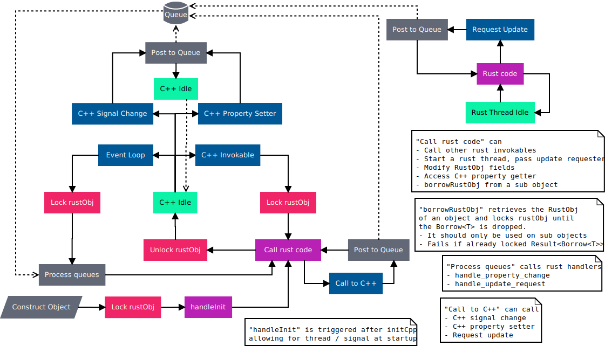

线程
概念
线程的一般概念是，当执行 Rust 代码时，在 C++ 端获取了一个锁，以防止从多个线程执行 Rust 代码。
这意味着直接从 C++ 调用的 Rust 代码（例如可调用函数和 handlers）在 Qt 线程上执行。
我们提供了一种解决方案来防止从信号连接进入死锁，例如，如果属性更改信号连接到 C++/QML 端的可调用函数，如果属性更改是从 Rust 可调用对象触发的，则将无法获取锁。解决方案是将可能导致死锁的事件发布到队列中，例如信号触发，然后在 Rust 可调用函数的锁被释放之后，在下一个事件循环发生时执行这些事件。
如果 Rust 代码需要监听属性变化，可以在 RustObj Handlers 中实现 handlers（例如 PropertyChangeHandler）。这是直接在 Qt 线程的事件循环中调用的。

多线程
为了在 Rust 端实现安全的多线程，我们使用 UpdateRequester. Rust 线程在哪里启动（例如一个可调用函数）UpdateRequester 就应该被克隆到该线程中。
然后，当后端线程需要更新 Qt 对象中的值时，它会请求更新，这将被发布到与上面相同的队列中。一旦事件循环发生，就会在 RustObj handlers 中调用 UpdateRequestHandler，这样您就可以安全地调用 setter 或从 Qt 线程发出信号并将您的状态同步到前端。
我们建议使用线程中的通道来发送信号枚举，或者发送在之后处理的 UpdateRequestHandler 的值.
下面是一个完整的 Rust 多线程对象示例。
#[make_qobject]
mod website {
use futures::{
channel::mpsc::{UnboundedReceiver, UnboundedSender},
executor::block_on,
FutureExt, StreamExt,
};
use futures_timer::Delay;
use std::{
sync::atomic::{AtomicBool, Ordering},
thread,
time::Duration,
};
enum Event {
TitleArrived(String),
}
pub struct Data {
url: String,
title: String,
}
impl Default for Data {
fn default() -> Self {
Self {
url: "known".to_owned(),
title: "Press refresh to get a title...".to_owned(),
}
}
}
struct RustObj {
event_sender: UnboundedSender<Event>,
event_queue: UnboundedReceiver<Event>,
loading: AtomicBool,
}
impl Default for RustObj {
fn default() -> Self {
let (event_sender, event_queue) = futures::channel::mpsc::unbounded();
Self {
event_sender,
event_queue,
loading: AtomicBool::new(false),
}
}
}
impl RustObj {
#[invokable]
fn change_url(&self, cpp: &mut CppObj) {
let url = cpp.url();
let new_url = if url == "known" { "unknown" } else { "known" };
cpp.set_url(new_url);
}
#[invokable]
fn refresh_title(&self, cpp: &mut CppObj) {
// TODO: SeqCst is probably not the most efficient solution
let new_load =
self.loading
.compare_exchange(false, true, Ordering::SeqCst, Ordering::SeqCst);
if new_load.is_err() {
println!("Skipped refresh_title request, because already in progress.");
return;
}
cpp.set_title("Loading...");
let url = cpp.url();
// Retrieve the update requester from the CppObj
let update_requester = cpp.update_requester();
let event_sender = self.event_sender.clone();
let fetch_title = async move {
// Simulate the delay of a network request with a simple timer
Delay::new(Duration::from_secs(1)).await;
let title = if url == "known" {
"Known website"
} else {
"Unknown website"
};
event_sender
.unbounded_send(Event::TitleArrived(title.to_owned()))
.unwrap();
// Request an update from the background thread
update_requester.request_update();
};
thread::spawn(move || block_on(fetch_title));
}
fn process_event(&mut self, event: &Event, cpp: &mut CppObj) {
match event {
Event::TitleArrived(title) => {
cpp.set_title(title);
self.loading.store(false, Ordering::Relaxed);
}
}
}
}
impl UpdateRequestHandler<CppObj<'_>> for RustObj {
fn handle_update_request(&mut self, cpp: &mut CppObj) {
while let Some(event) = self.event_queue.next().now_or_never() {
if let Some(event) = event {
self.process_event(&event, cpp);
}
}
}
}
impl PropertyChangeHandler<CppObj<'_>, Property> for RustObj {
fn handle_property_change(&mut self, cpp: &mut CppObj, property: Property) {
match property {
Property::Url => self.refresh_title(cpp),
Property::Title => println!("title changed"),
_ => unreachable!(),
}
}
}
}